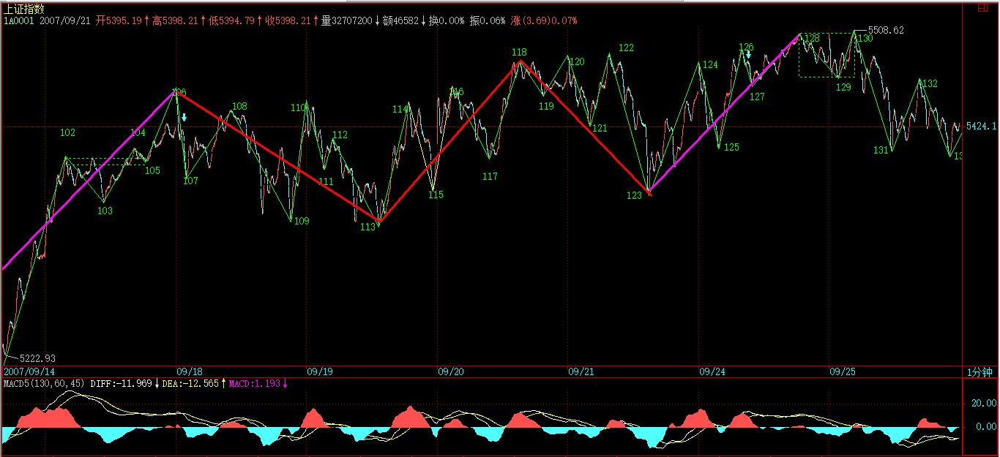

(2007-09-24 21:31:06)
走势反映的是人的贪嗔痴疑慢，如果你能通过走势当下的呈现，而观照其中参与的心理呈现，就等于看穿了市场参与者的内心。【韶山映山红】通过走势当下的呈现，就可以观照所有参与者的心理呈现的合力。】
心理，不是虚无飘渺的，最终必然要留下痕迹，也就是市场走势本身。【韶山映山红】市场的合力也不是虚无缥缈的，大资金的分力也必然要留下痕迹，所有的一切都会体现在市场走势上。如何辨识、解读才是关键。】
而一些具有自相似性的结构，就正好是窥测市场心理的科学仪器。【韶山映山红】还有哪些“具有自相似性的结构”？★以后研究。】
注意，分型不是分形，分形理论，是数学的一个分支，有人用这分支的一些研究成果硬套到市场走势上，得出来的结论，没有太大意义。【韶山映山红】分型，和分形，有哪些异同？分型是否也可以像分形那样构造出整个走势？★可以做个专题，以后研究。】没有包含关系的图形中，三个相邻K线之间可能组合的完全分类是：顶分型、底分型、上升K线、下降K线。换句话说，包括两种分类：分型和顺序K线。分型不是固定位置的独立元素，是可以任意组合的，也就是说，很难说构成元素是哪一个分型。】
【韶山映山红】分形，《寻找隐秘的维度 Hunting the Hidden Dimension (2008)》 《神秘的混沌理论 The Secret Life of Chaos (2009)》】
【韶山映山红】分形理论(Fractal Theory)是当今十分风靡和活跃的新理论、新学科。“分形”这个名词是由美国IBM公司研究中心物理部研究员暨哈佛大学数学教授曼德勃罗特（Benoit B.Mondelbrot）在1975年首次提出（创造）的，其原义是“不规则的，分数的，支离破碎的”物体，这个名词是参照了拉丁文fractus(弄碎的)后造出来的。它有frature(分裂)fraction（分数）的双重意义，是一门以不规则几何形态为研究对象的新几何学，但其本质却是一种新的世界观和方法论。著作有《大自然的分形几何学》 ，以新几何学的方式看待自然界的种种形态。在混沌的表面下，其隐藏着某种秩序，它可以用公式来描述海岸线、山形、河川、岩石、树木、森林、云团、闪电、海浪等等。恰是由于它们有着不同的公式，因而呈现出了不同种几何图案。在科学研究中，对许多非规则性对象建模分析，如星系分布、渗流、金融市场的价格浮动等复杂对象，都需要一种新的几何学来描述。所以, 一般地可把“分形”看作大小碎片聚集的状态，是没有特征长度的图形和构造以及现象的总称。描述分形的几何，称为分形几何，又称为描述大自然的几何。】
【韶山映山红】计算机生成分形。】
【韶山映山红】分形是具有如下几个特征的图形:1. 分形具有自相似性。从上面两个例子可以看出：分形自身可以看成是由许多与自己相似的，大小不一的部分组成。2. 分形具有无穷多的层次。无论在分形的哪个层次，总能看到有更精细的，下一个层次存在。分形图形有无限细节，可以不断放大，永远都有结构。3. 分形的维数可以是一个分数。4. 分形通常可以由一个简单的，递归、迭代的方法产生出来。】
【韶山映山红】分形理论的自相似性概念，最初是指形态或结构的相似性。也就是说，在形态或结构上具有自相似性的几何对象称为分形。而后随着研究工作的深入发展和研究领域的拓宽，又由于系统论、信息论、控制论、耗散结构理论和协同论等一批新学科相继涌现的影响，自相似性概念得到充实与扩充，人们把形态结构、功能和时间上的相似性都包含在自相似性概念之中，即所谓的广义分形概念。】
【韶山映山红】混沌理论撕碎了牛顿学说的美梦，科学进入新时代。牛顿学说把世界视为精密机械，显然缠论不是。对此，缠师是非常明白的。那么，缠师为什么还要比照牛顿的《自然科学的数学原理》，把缠论视为“市场哲学的数学原理”，而不是混沌或者分形或者其他更新的说法？】
本ID理论的逻辑，是直接来源于市场走势本身，而不是一个先验的，市场之外的数学理论。【韶山映山红】分形是市场之外的数学理论，拿来套市场的走势就成为了先验论。】
至于这现实的市场逻辑显现出数学理论的结构，那是另一回事情。【韶山映山红】现实的市场逻辑显现出数学理论的结构，只是一种巧合，不代表相应的数学理论就能够揭示真相。那么，是否可以有某种理论来揭示真相呢？或者说，可以揭示真相的缠论，和那些数学理论有什么本质的区别？★以后研究。】
世界，本来就是数学的。但本ID的理论，不是任何原有数学理论的应用，而是市场本身现实逻辑的直接显现，这是一个极为关键的区别。【韶山映山红】不是原有数学理论的应用，也就是说，缠论对应的数学理论，还没有诞生。】
显然，一个顶分型之所以成立，是卖的分力最终战胜了买的分力，而其中，买的分力有三次的努力，而卖的分力，有三次的阻击。【韶山映山红】向上是买的分力的呈现，向下是卖的分力的呈现。盘面的挂单只是被动成交，有阻滞作用，不代表动力的方向。】
用最标准的已经过包含处理的三K线模型：【韶山映山红】分型最标准的结构。力度上是头肩顶的形态。】
第一根K线的高点，被卖分力阻击后，出现回落，这个回落，出现在第一根K线的上影部分或者第二根K线的下影部分，【韶山映山红】还有两根K线的重叠部分。】
而在第二根K线，出现一个更高的高点，但这个高点，显然与第一根K线的高点中出现的买的分力，一定在小级别上出现力度背驰，从而至少制造了第二根K线的上影部分。
最后，第三根K线，会再次继续一次买的分力的攻击，但这个攻击，完全被卖的分力击败，从而不能成为一个新高点，在小级别上，大致出现一种第二类卖点的走势。【韶山映山红】很多时候，不是精准的某个小级别的二卖，而是“大致”那个样子的走势形状。★】
由上可见，一个分型结构的出现，如同中枢，都是经过一个三次的反复心理较量过程，只是中枢用的是三个次级别。所谓一而再、再而三，三而竭，所以一个顶分型就这样出现了，而底分型的情况，反过来就是。【韶山映山红】如果分型算三次，中枢的三个次级别就不是三次，而是两次。★】
【韶山映山红】如果是一个Ｖ型反转的分型，就只有一次的较量，还算是合格的分型吗？有什么区别呢？单边Ｖ型反转的分型呢？★以后研究。】
现在，我们可以深入分析这三根K线的不同情况。
首先，一个完全没有包含关系的分型结构，意味着市场双方都是直截了当，没有太多犹豫。
包含关系（只要不是直接把阳线以长阴线吃掉）意味着一种犹豫，一种不确定的观望等，一般在小级别上，都会有中枢延伸、扩展之类的东西。【韶山映山红】低几个级别就一定会有？★以后研究】
【韶山映山红】包含，和接近重叠，两种Ｋ线组合的小级别有什么区别？★为什么包含就可以忽略这些小级别的中枢延伸、扩展之类的影响，而假装他们不存在？★】
【韶山映山红】如果是“直接把阳线以长阴线吃掉”，那又是什么情况？★诱多骗线？以后研究。此前的2007.09.11就是“把阳线以长阴线吃掉”的实例。下面是日线图和1分钟图的对比。】
其次，还是用没有包含关系的顶分型为例子。
如果第一K线是一长阳线，而第二、三都是小阴、小阳，那么这个分型结构的意义就不大了，【韶山映山红】“分型结构的意义”是构成顶底的转折，这种结构很可能是中继，至少要在震荡结束后才选择方向，而不是当下转折，所以意义就不大了。】在小级别上，一定显现出小级别中枢上移后小级别新中枢的形成，【韶山映山红】第一K线的长阳就是小级别中枢上移，后续的小阴、小阳就是形成小级别新中枢的过程。】一般来说，这种顶分型，成为真正顶的可能性很小，绝大多数都是中继的。【韶山映山红】如果有新高背驰就会形成新的顶分型，没有新高就需要小转大才会转折。这样的底分型也是“绝大多数都是中继”吗？★以后研究。】
例如，上海日线9月17、18、19这三根K线组成的顶分型结构。【韶山映山红】这个实例第二、三K线，如果说实体部分还可以勉强说是小阴、小阳，算上影线就没法说了，尤其是相对第一K线的所谓长阳而言，更是算不上小阴、小阳。只不过前面的递归走势可以算是小级别的中枢移动，这个地方算是形成中枢，线段划分也可以看出是中枢延伸震荡，还需要等待方向选择。】
但，如果第二根K线是长上影甚至就是直接的长阴，而第三根K线不能以阳线收在第二根K线区间的一半之上，【韶山映山红】这样的当天见顶、当天就急速的变脸，甚至撕破脸，还有什么后势可言。】那么该顶分型的力度就比较大，【韶山映山红】顶分型的力度是指向下转折的力度。】最终要延续成笔的可能性就极大了。【韶山映山红】头肩顶成型，还向右倾斜，大厦将倾的样子。】分型的力度对是否延续成笔的预判。换句话说，笔的形成，是分型力度的延续。】这里描述的是转折的力度，而不是背驰的力度。对应到走势类型分析，趋势背驰的力度对未来走势的影响相对要小，反弹的力度才是转折的力度，才是未来走势的风向标。所以29课才以反弹的位置作为分类依据。★可以做个专题，以后研究。】
例如上海日线6月18、19、20、21，里面有一个包含关系，但这包含关系是直接把阳线以长阴线吃掉，是最坏的一种包含关系。【韶山映山红】这个例子里，阴线直接吃掉阳线，是因为已经开始背驰转折了。】
【韶山映山红】
H<REF(H,1) && REF(H,2)<REF(H,1) && REF(H,1)=HHV(H,7)
&&
L<REF(L,1) && REF(L,2)<REF(L,1)
&&
(REF(H,1)-REF(C,1))>((REF(H,1)-REF(L,1))*M/100)
&&
C< ((REF(L,1)+((REF(H,1)-REF(L,1))/2))) && C>O
;
】
一般来说，非包含关系处理后的顶分型中，第三根K线如果跌破第一根K线的底而且不能高收到第一根K线区间的一半之上，属于最弱的一种，也就是说这顶分型有着较强的杀伤力。【韶山映山红】这里说的“最弱”是指上涨的力度最弱，如果说顶分型的力度（转折的力度）反而是最大的。】如果分型区间的一个边界是第三根Ｋ线形成的，这个分型的力度就很大。】
例如上海日线5月28、29、30。【韶山映山红】530这个太特殊了。】
分型形成后，无非两种结构：一、成为中继型的，最终不延续成笔；二、延续成笔。【韶山映山红】“延续成笔”是指形成反向笔，分型有效完成。不能延续形成反向笔就成为中继型。分型，中继型，是分型结构的两种命运。】
对于后一种，那是最理想的，例如在日线上操作完，就等着相反的分型出来再操作了，中间可以去宠幸别的面首，这是效率最高的。
而对于第一种情况，前面说过，可以看是否有效突破5周期的均线，例如对日线上的顶分型，是否有效跌破5日均线，就是一个判断顶分型类似走势很好的操作依据。【韶山映山红】MA5是分型是否延续成笔的简易辅助判断工具。】
不过，还有更精确简单的，就是这分型所对应的小级别中枢里，是否出现第三类买卖点，而且其后是否出现中枢移动。【韶山映山红】“分型所对应的小级别中枢”，可能是1分钟线段中枢，也可能是1分钟笔中枢。递归的5分钟中枢很少见。】
例如，对于一个顶分型，该顶分型成立后，对于该分型区间在小级别里一定形成某级别的中枢，选择其中最大一个，例如日顶分型后，可以找到相应的5、1分钟中枢，一般最大的就是5分钟，30分钟没可能，因为时间不够。【韶山映山红】“选择其中最大一个”是指级别最大。这里的级别是递归级别，还是K线图周期的级别？应该是K线图周期的级别。也就是说，这里的中枢是1分钟K线图的笔中枢或者5分钟K线图的笔中枢。以后研究。 最简单的日线顶分型包括3个日K线。30分钟K线24个，完全不可能形成30分钟中枢。5分钟K线144个，。。。。。。。。】
如果该5分钟中枢或1分钟中枢出现第三类卖点，并该卖点不形成中枢扩张的情形，那么几乎100%可以肯定，一定在日线上要出现笔了。【韶山映山红】形成第三类卖点，意味着小级别中阴阶段结束，中阴中枢不扩张，就会出现向下的中枢移动，就可以预判将要出现日线向下笔。】
【韶山映山红】在1分钟线段中枢以上级别的角度看，感觉现在都不是在分型形成中枢，而是形成中枢以后的大幅度震荡，震荡的高低点形成分型的顶底。这时候不是缠师说的那样寻找三买卖点，而是一二类买卖点就要做出决断。 以后研究。★】
【韶山映山红】反过来用分型的思维看小级别走势。1分钟线段中枢走出头肩形，然后出现第三类买卖点，然后再去考察日线分型，看看有没有分型，是不是更实际？★】
可以100%肯定的，要不出现笔并最终有效破坏该顶分型，那一定要出现某级别的第三类买点，【韶山映山红】这里说的是不出现日线上的向下笔、并且还能够破坏当下的顶分型，就要出现中阴中枢的第三类买点。 什么是有效破坏分型？分型的有效是成为转折的标志，也就是说，走出反向笔才是分型有效。如果原来的走势延伸、必然形成新的分型、使当下的分型成为中继型，分型最终转折失败，就是对这个分型的破坏。】
否则就算有短时间的新高，也一定是假突破。【韶山映山红】如果没有出现中阴中枢的第三类买点，有新高也只是中阴中枢的震荡，不靠谱。】所以结合小级别的中枢判断，顶分型是否延伸为笔，是可以当下一目了然的。【韶山映山红】出现三买点，顶分型就可能延伸向上的日线笔，没出现三买卖点就会盘整，不排除慢慢走出日线笔。★】
如果你能有效地分辨中继分型，那么你的操作就会有大的进步。
一般来说，可以把分型与小级别走势类型结合操作，例如日线与5分钟的。【韶山映山红】这里说的“5分钟的”“小级别走势类型”，应该是5分钟K线图上看到的走势划分，而不是1分钟线段中枢递归的5分钟走势。★日线分型对应到小级别，更多的是5分钟笔中枢，甚至1分钟笔中枢。】
如果一个小级别的中枢震荡中连日K线都没出现顶分型结构，那么，这个中枢震荡就没必要走了，【韶山映山红】“没出现顶分型结构”是指还没有满足要求的顶分型的第三K线。所以当下做完全分类就是：1，日线高点一直有新高。2，日线高点后的K线处于包含状态。】
后者就算打短差也要控制好数量，【韶山映山红】“后者”指“5分钟的”“小级别走势类型”。】
因为，没有分型，就意味着走势没结束，随时新高，你急什么？【韶山映山红】换句话说，如果小级别的中枢震荡中，还没有出现三买卖点，但是出现了日线分型结构，就要小心了。★】
而一旦顶分型成立，必然对应着小级别走势的第一、二类卖点，【韶山映山红】“一旦顶分型成立”，也就是满足要求的顶分型的第三K线出现。首先，顶分型对应着一卖二卖，这时候要完成退出的操作。否则，也没有后面的然后了。】
其后，关键看新形成中枢的第三类买卖点的问题：【韶山映山红】“新形成中枢”还是只中阴中枢，这里是第三K线的回踩才形成。如果出现三买，不是向上扩张就是向上趋势，就会破坏顶分型，小级别走势继续向上。三买就是回补点。如果出现三卖，不是向下扩张就是向下趋势，就会顶分型延伸形成向下笔，三卖就是清仓离场点。】
一般情况下，如果是中继的，都是第三类卖点后形成中枢扩展，也就是有一个绝妙的盘整底背驰让你重新介入。【韶山映山红】如果出现三卖，不是向下扩张就是向下趋势。然后出现盘整底背驰，说明一卖二卖形成的转折被一个盘整化解了，可以重新介入。由于中阴中枢的三卖就是清仓离场点，所以这里用词“重新介入”而不是回补。】
这样，利用分型搞了一个美妙的短差，又不浪费其后的走势，这就是一个比较及格的操作了。【韶山映山红】这时候我们可以判断“是中继”，可以“重新介入”，是因为有了盘整底背驰，而不是顶分型的必然。左右逢源其实还是小级别走势分析的结果。★】
【韶山映山红】这里是第二个“盘整底背驰”，一共两个。“第三类卖点后形成中枢扩展，也就是有一个绝妙的盘整底背驰让你重新介入。”这里可以理解为中枢离开段的线段类盘整背驰，也可以理解为中枢本身所构成的a+A+b盘整背驰转折。★以后研究。】如果没有a+A+b盘整背驰，只有中枢离开段的线段类盘整背驰，就可能形成趋势而不是中枢扩展，由此可以推断，这里说的“第三类卖点后形成中枢扩展”，就是a+A+b盘整背驰。】
这操作，其实我们都经历过，就是上海周线9月7日前后那个顶分型的操作，一个完美的中继顶分型，在假跌破5周均线以及相应小级别的背驰的共同作用下完成。【韶山映山红】周线顶分型，“相应小级别”是谁？
【韶山映山红】周线图。区间：2007.06.25-2007.09.21。】
【韶山映山红】日线图。区间：2007.06.25-2007.09.21。】
【韶山映山红】1分钟递归图。区间：2007.06.25-2007.09.21。】
【韶山映山红】日线图、1分钟递归图。区间：2007.08.20-2007.09.21。这个周线顶分型对应了一个30分钟中枢。这个30分钟中枢由两个5分钟中枢扩张升级而来，第二个5分钟中枢形成后的震荡延伸的回跌导致扩张升级。】
【韶山映山红】看看1分钟图上的周线顶分型。如果最后的回涨速度够快，顶分型就不成立了。可见，从分型可以去推测小级别走势，但小级别走势不一定表现为大级别分型。】
【韶山映山红】从1分钟线段中枢的角度看，一直是中枢延伸，然后延伸扩展为5分钟中枢，84开始的下跌形成1分钟中枢的三卖，盘整底背驰之后开始反弹。】
注意，利用分型，例如顶分型，卖了以后一定要注意是否要回补，如果一旦确认是中继的，应该回补，否则就等着笔完成再说。【韶山映山红】利用分型的操作，实际上是利用小级别盘整背驰的对冲操作，所以要注意回补问题。不排除小级别盘整背驰引发的更大级别转折，所以分型也可能形成笔。】
但一定要注意，中继顶分型后，如果其后的走势在相应小级别出现背驰或盘整背驰，那么下一顶分型，是中继的可能性将大幅度减少。【韶山映山红】相应小级别出现背驰或盘整背驰，然后就要回调。回调之后再上涨，就是一种趋势走势了，相当于两个中枢之后的趋势，难有更多的中枢了。】
中继分型，有点类似刹车，一次不一定完全刹住，但第一刹车后如果车速已明显减慢，证明刹车系统是有效的，那么第二次刹住的机会就极大了，除非你踩错，一脚到油门上去了。【韶山映山红】对小级别来说，中继分型类似刹车。对本级别来说，中枢也是类似刹车。】
【网文】分形、分型和区间套以及缠论
(2012-01-05 19:10:09)
分形理论是现代数学的一个分支，由曼德尔布罗特创立，用来描述不规则和支离破碎的几何图形。分形是几何图形在不同尺度上的重复，显示出越来越小的自相似图形。小的图形在某种程度上与整体具有相似性，这种规律是自然界中的常态。
树叶的脉络看上去像枝条，枝条看上去像树。岩石看上去像缩小的山峰，据说人的肺也是如此，还有海岸线。
分形的核心在于自相似性，不同级别的图形基于微型递归法则产生同种结构的外形。现代视觉艺术、音乐创作和诗歌等都部分仰赖于分形理论。
缠中说禅的理论中提到区间套定理，用以对不同级别的市场图形进行归类。事实上，分级别的市场思想更接近于分形理论。
闭区间套定理：有无穷个闭区间，第二个闭区间被包含在第一个区间内部，第三个被包含在第二个内部，以此类推（后一个线段会被包含在前一个线段里面），这些区间的长度组成一个无穷数列，如果数列的极限趋近于0（即这些线段的长度最终会趋近于0），则这些区间的左端点最终会趋近于右端点，即左右端点收敛于数轴上唯一一点，而且这个点是此这些区间的唯一公共点。（开区间同理）。
从结构上来看，区间套定理对于市场的分级别操作是有帮助的，但是从分形思想上，更接近市场的分级别立体操作。
缠中说禅如是说：注意，分型不是分形，分形理论，是数学的一个分支，有人用这分支的一些研究成果硬套到市场走势上，得出来的结论，没有太大意义。本ID理论的逻辑，是直接来源于市场走势本身，而不是一个先验的，市场之外的数学理论。至于这现实的市场逻辑显现出数学理论的结构，那是另一回事情。
的确，市场图形是分形思想的完美表达！也的确没有操作的依据，但是完全可以把分形思想补充进缠论。
分型是专属于缠中说禅的，对于操作来说，分型的定义对于缠中说禅的体系并不处于核心地位，而是作为将市场走势分类的标准提出。
分形与分型，不同的两个东西，缠中说禅是交集，仅此而已。
(2007-09-25 15:49:49)
从上周就开始告诉各位，月儿圆，有震荡，昨天最后一句还特别强调“月亮圆了，注意短线震荡的加大”，因此，对今天的震荡，如果还把握不住，那只能证明，你确实不适宜短线操作，那就中线点，无所谓的。中线上，大盘的压力越来越大，如果不是有人为了新股护盘，今天可不止跌这么点。

【韶山映山红】创新高，却全天跌势，还包含了前日的阳线，要走出很难看的顶分型的节奏啊。】
至于本ID的理论有没有用，这个问题根本无须讨论，如果你连今天划分中132（13点46）的第三类卖点都没当下看出来，那就更没资格讨论这个问题。看看132与129（9点47）之间不到半点的差距，就知道这理论的力量有多大。【韶山映山红】为什么三卖和中枢ZD差距很小，就代表理论的力量很强大？★】
现在的人都很奇怪，似乎全世界的人都欠了他的，你考不上北大，那一定是老师的错，老师欠了你的。你学不会几何，那几何肯定错了，就如同今晚的月亮，都是他的错。本ID对这套逻辑从来没兴趣搭理，本ID又不是卖月饼的，过了今晚，本ID的理论依然框架着所有的股票走势，就如同三角形之和180度框架着欧几里德平面上的图形。
个股方面，说句梦话，千万别信：可以开始关注两只股票600319、【韶山映山红】600319亚星化学】000822，【韶山映山红】000822山东海化】这都是基本面上有可能出现重大变化的。
不过必须声明：由于目前大盘的位置十分危险，对个股的介入，一定要在大级别的买卖点。【韶山映山红】这两个票肯定都不在大级别买点上。基本面上的变化，如果早就隐含了，就该见光死了。如果是新发生的，就会有一波下杀。】
有些股票，如果技术好的，可以不断震荡减低成本去介入，例如600078。【韶山映山红】600078澄星股份。】

毕竟现在不是3000点，1000点，没有什么便宜的价位了，如果成本没本事降下来，最好就什么都别介入，等大盘暴跌再说。如果有那本事，那就无所谓了。
【韶山映山红】128-129这里的向上跳空缺口没有单独成段。如果这样，除了530那种极端状况之外，恐怕没有单独成段的情况了。★★在走势没有真正发生转折的时候，成段也没有意义。】
【韶山映山红】20070923.jpg（2007-09-24 15 27）】

【韶山映山红】20070925.jpg（2007-09-26 15 52）】
【韶山映山红】20070927.jpg（2007-09-28 15 47）】
无聊的股票，就不说了，这里有本ID的七古旧作一首，祝各位中秋好。
补充一句，如果连平水韵都没搞明白，就不要批评本ID的韵不对了，本ID的七古都从来不借邻韵，别说律诗了。
中秋见月
缠中说禅
一轮喷吐天海倾
荡雾崩云万峰明
虹光瑞气流叠彩
银汉挽洗玉眸清
皓魄皎魂当空舞
仙籁无弦惊花羽
忽抟扶摇上苍冥
桂香散落如星雨
水晶宫阙瑶琴错
飞镜琼台青烟薄
云母屏前泪嫦娥
岁岁今宵悔灵药
朱帘卷出人间世
今古潮生杯中逝
把酒问天天不言
江湖阴晴孤舟系
广寒一醉三千年
依旧有月今夜圆
何须长圆如此夜
梦马安逐羲和鞭
碧虚群动霎然寂
冰盘天心光欲滴
参奔斗旋一时间
乾坤声裂何处笛
流萤栖鹊草木闲
暗河一抹水潺潺
金樽易浅天易老
未赋红尘行路难
凉月渐斜东渐白
光残露满窗前石
晚上都好好陪父母家人，今晚就不写帖子了。
先下，再见。
(2007-09-26 15:56:37)
月亮的力量有多大，各位这两天也见识了。可以不相信月饼，但一定要相信月亮。为什么？连地球上的潮汐都要抄袭月亮，那破股票难道比潮汐还要潮汐？昨天已经明确告诉“如果不是有人为了新股护盘，今天可不止跌这么点”，昨天没跌够，今天继续，就这么简单。
今天早上的上攻，一没有突破昨天的第三类卖点，
二反而是形成标准的顶分型第三根K线的上冲，
不管你相信不相信本ID的理论，反正后面的走势，如教科书般。现在的走势十分简单，一个1分钟的走势正离开前面那5分钟中枢，这1分钟走势什么时候能完成，就看后面的走势了，而完成以后的回拉才是最重要的，是否能形成第三类卖点，这才是最近走势的关键，如果形成，那这两天，最多只能算田亮的1米板，后面是表演3米还是10米的，这对于观众，其实反而已经不重要了。【韶山映山红】1分钟下跌的1米板，五分钟向下扩张的3米板，5分钟下跌趋势的10米板。】
个股方面，今天水井坊终于像水井坊应该那样水井坊了一把，看看这股票，就知道什么叫折腾。几乎一年，就在这里搞，为什么？就是因为里面有着N伙人，还都看好，所以就互相折腾，这次是真是假？天知道。为什么？因为后面谁只要一先动手，N方又一起开始折腾。其实，这个游戏很好玩，只是浪费了一只质地如此好的股票。
不过，好股票最终都要发光的。就像000999，从本ID在这里开始讲到现在，快10个月了，开始6元抢东西，然后在12元上下和汉奸基金的斗法，后来又涌入一群无聊人在15元上，东搞西搞，中间传闻漫天飞，结果怎么样？请看看新进来的大股东掏了多少钱，一个掏了这么多钱的人，要干什么大事，难道还有什么疑问？本ID反复说要海枯石烂，但真正干起来，估计很多人就会被市场的波动所迷惑了。【韶山映山红】000999三九医药，现在叫华润三九。】
每一只股票，都是一个故事，说不完。做完一只股票，你就成了有故事的人了。
再次提醒，昨天说那两只股票，如果大盘有大问题，也会跟着调整的，但由于基本面上潜在大变化，所以市场如果大波动，将提供一个好的介入时机。本ID说的股票，从来都是中长线角度的，有足够的时间让你介入，关键是看好买卖点。
今天可以回答问题到4点半。
[匿名] 月儿 2007-09-26 15:59:37
*月儿(199306010) 15:11:31
缠泽天下！我今天买了600319！听缠姑娘的话！【韶山映山红】600319亚星化学】
==
不是听本ID的话，而是要看图，有卖点先卖，有买点再回补，这样才能把成本降下来。
注意，现在介入股票，和1000点时候不同，如果能动态就要动态，否则大盘一旦有大波动，谁都不能保证，一定有人给你举杠铃。
2007-9-26 16:02
[匿名] 小小 2007-09-26 16:01:36
妹妹的432过百啦.妹妹踹轿子的时候一定不能过猛啊.【韶山映山红】600432吉恩镍业】
==
很好，现在还能拿着。从20元能拿到现在的，估计也凤毛麟角了。
这股票，中长线潜力还在，当然，短线如果大盘特别恶劣，会有影响。
2007-9-26 16:04
绿幽灵 2007-09-26 16:04:22
缠好～中枢虽然看得懂了,但是运用起来一点也不着边际,唉!!还有一个,明明看起来是背驰了,买进却又再跌,为啥呢?
==
请首先要确定你的明明是正确的，事实上，很多所谓明明的背驰，根本就不是。
很多人，连中枢、走势类型、级别都没搞清楚，就分析背驰，这有可能准确吗？
2007-9-26 16:07
[匿名] 新浪网友 2007-09-26 16:07:25
缠子：在看高级别K线图时，是应该把低级别图上的分段转过去还是重新分笔找线段？有时候这两种做法的分段是不一致的
==
为什么要一致？【韶山映山红】肯定不一致。一致反而是巧合。】
低级图上用中枢、走势类型。高级图上用分型，线段，等于有两套有用的工具去分析同一走势，这是天大的好事。【韶山映山红】1分钟图上的线段中枢开始递归出一种分析结果，高级图上用笔、线段甚至分型，来分析另一种结果，同一个走势，两种不同的分析方法，相辅相成。】
2007-9-26 16:10
[匿名] 新浪网友 2007-09-26 16:08:04
LZ老师,000822是不是有外资注入?【韶山映山红】000822山东海化】
==
本ID不是上市公司，不能发布任何消息，请原谅。
2007-9-26 16:12
[匿名] 空言 2007-09-26 16:10:47
相信月亮,是不是每到农历十五前就清仓啊
==
哪里有这么机械的，但如果月亮还带上一个背驰、分型之类的东西，那当然就有效了。
月亮只是借了太阳的光辉，本ID理论所框架的东西，才是太阳。【韶山映山红】相信的不是月亮，是太阳。太阳是缠论，月亮是市场。】
2007-9-26 16:14
[匿名] 新浪网友 2007-09-26 16:14:11
是不是买高价股更安全，尤其是上百元的？
==
只能说，高价的，散户都走了，杠铃举起来轻松点。
但如果特别大的调整，谁都不会硬抗，除非脑子有水。
【韶山映山红】现在最高价的股票是600519贵州茅台。】
2007-9-26 16:17
[匿名] 50年以前 2007-09-26 16:15:47
老师好，对今天线段划分有疑问，1346上去那一段并没有破坏130向下段的最后一笔，所以我觉得不应该单独画成一段，也就是131段应该是图上的133的位置，请老师明示【韶山映山红】此人问的是9月25日的线段划分。131-132的第一笔没有笔破坏130-131线段，属于第二种情况。】
==
这是第二种类型。【韶山映山红】131底分型成立，第二种情况，132顶分型成立，所以线段成立。】
2007-9-26 16:18
[匿名] 新浪网友 2007-09-26 16:16:14
不知636年线会否有支撑。持有三个月了。【韶山映山红】600636三爱富。】
==
这种思维要不得，不要考虑什么支撑位置。看图形本身。
而且，本ID不是一早说过，连半年线都没上，散户没必要参与。
但这股票，中长线肯定是好股票，不过，最近和水井坊前期一样，进入一个怪圈。
2007-9-26 16:20
[匿名] 新浪网友 2007-09-26 16:19:31
请问缠主,对建行的定价怎么看?谢谢【韶山映山红】601939建设银行。2007-09-25上市。开盘8.55元，收盘8.53元。】
==
本ID只看走势，不看定价。
2007-9-26 16:22
[匿名] 夜雨 2007-09-26 16:07:59
三九的走势就是教科书现场版，从去年到今年的走势是一部还未完成的作品，跟000858从20006年初到现在的走势都是主流资金的作品，他们有参照作用。
这样的公告，早在主力的意料之中，昨天有几人会在前几天卖了之后买回来呢？一般人，都会想今天确认了再买的，可再也不给机会了。所以我们能做的就是持有，逢低加仓。
说实话，三九我是从年前10元买入的，但仓位很少。到530低点加仓，四个月盘整中，有钱赚了，我就加一些，这一次18元加仓，21.5元再加仓。现在已经是最初投入的10倍了。自己认为，陪同他一路走来。是一次成功的操作了，对意志，对持股，对技术，都得到很大的提高。
谢谢姐姐，送给我最好的中秋节礼物，能对我在999的操作，发一朵大红花吗？
===
当然可以，大红花。成功操作一只股票，就是对自己心态最好的锻炼。
其实，每一只股票的故事都大同小异，就如同每一个故事，归根结底，都只是故事般平常。
【韶山映山红】提问者是追涨加仓，追成10倍，而且仓重在相对高价，没提到降成本的操作，恐怕真的“归根结底，都只是故事般平常。”】
2007-9-26 16:25
年年一变三 2007-09-26 16:25:28
请问缠主，这几天钢铁板块已经调整得比较厉害了，若再碰到大盘跳水，它能独善其身吗？盼复！谢谢！！
==
涉及预测的问题，本ID都没兴趣。
应该培养这样的习惯，就是你的眼光，只投向有买点的股票。
股票这面首想被宠幸，这很简单，用买点来搔首弄姿就可以。
2007-9-26 16:29
对不起，马上有一个关于PE的会，必须下了。
再见。
2007-9-26 16:31
本课目录
教你炒股票82：分型结构的心理因素【网文】分形、分型和区间套以及缠论都是月亮惹的祸（附录七古：中秋见月）可以不相信月饼，但一定要相信月亮